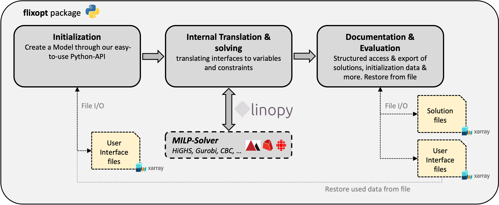

FlixOpt: Energy and Material Flow Optimization Framework


FlixOpt is a Python framework for optimizing energy and material flow systems - from district heating networks to industrial production lines, from renewable energy portfolios to supply chain logistics.
Start simple, scale complex: Build a working optimization model in minutes, then progressively add detail - multi-period investments, stochastic scenarios, custom constraints - without rewriting your code.
🚀 Quick Start
That's it! FlixOpt comes with the HiGHS solver included. You're ready to optimize.
The basic workflow:
import flixopt as fx
# 1. Define your system structure
flow_system = fx.FlowSystem(timesteps)
flow_system.add_elements(buses, components, effects)
# 2. Create and solve
calculation = fx.FullCalculation("MyModel", flow_system)
calculation.solve()
# 3. Analyze results
calculation.results.solution
Get started with real examples: - 📚 Full Documentation - 💡 Examples Gallery - Complete working examples from simple to complex - 🔧 API Reference
🌟 Why FlixOpt?
Progressive Enhancement - Your Model Grows With You
Start simple:
# Basic single-period model
flow_system = fx.FlowSystem(timesteps)
boiler = fx.Boiler("Boiler", eta=0.9, ...)
Add complexity incrementally:
- Investment decisions → Add InvestParameters to components
- Multi-period planning → Add periods dimension to FlowSystem
- Uncertainty modeling → Add scenarios dimension with probabilities
- Custom constraints → Extend with native linopy syntax
No refactoring required. Your component definitions stay the same - periods, scenarios, and features are added as dimensions and parameters.
→ Learn more about multi-period and stochastic modeling
For Everyone
- Beginners: High-level components that "just work"
- Experts: Full access to modify models with linopy
- Researchers: Quick prototyping with customization options
- Engineers: Reliable, tested components without black boxes
- Students: Clear, Pythonic interfaces for learning optimization
Key Features
Multi-criteria optimization: Model costs, emissions, resource use - any custom metric. Optimize single objectives or use weighted combinations and ε-constraints. → Effects documentation
Performance at any scale: Choose calculation modes without changing your model - Full, Segmented, or Aggregated (using TSAM). → Calculation modes
Built for reproducibility: Self-contained NetCDF result files with complete model information. Load results months later - everything is preserved. → Results documentation
Flexible data operations: Transform FlowSystems with xarray-style operations (sel(), resample()) for multi-stage optimization.
🎯 What is FlixOpt?
A General-Purpose Flow Optimization Framework
FlixOpt models any system involving flows and conversions:
- Energy systems: District heating/cooling, microgrids, renewable portfolios, sector coupling
- Material flows: Supply chains, production lines, chemical processes
- Integrated systems: Water-energy nexus, industrial symbiosis
While energy systems are our primary focus, the same foundation applies universally. This enables coupling different system types within integrated models.
Modern Foundations
Built on linopy and xarray, FlixOpt delivers performance and transparency. Full access to variables, constraints, and model structure. Extend anything with native linopy syntax.
Our Position
We bridge the gap between high-level strategic models (like FINE) and low-level dispatch tools - similar to PyPSA. FlixOpt is the sweet spot for detailed operational planning and long-term investment analysis in the same framework.
Academic Roots
Originally developed at TU Dresden for the SMARTBIOGRID project (funded by the German Federal Ministry for Economic Affairs and Energy, FKZ: 03KB159B). FlixOpt evolved from the MATLAB-based flixOptMat framework while incorporating best practices from oemof/solph.
🛣️ Roadmap
FlixOpt aims to be the most accessible, flexible, and universal Python framework for energy and material flow optimization. We believe optimization modeling should be approachable for beginners yet powerful for experts, minimizing context switching between different planning horizons.
Current focus: - Enhanced component library (sector coupling, hydrogen, thermal networks) - Examples showcasing multi-period and stochastic modeling - Advanced result analysis and visualization
Future vision: - Modeling to generate alternatives (MGA) for robust decision-making - Advanced stochastic optimization (two-stage, CVaR) - Community ecosystem of user-contributed components
🛠️ Installation
Basic Installation
Includes the HiGHS solver - you're ready to optimize immediately.
Full Installation
For additional features (interactive network visualization, time series aggregation):
Solver Support
FlixOpt supports many solvers via linopy: HiGHS (included), Gurobi, CPLEX, CBC, GLPK, and more.
🤝 Contributing
FlixOpt thrives on community input. Whether you're fixing bugs, adding components, improving docs, or sharing use cases - we welcome your contributions.
📖 Citation
If FlixOpt supports your research or project, please cite:
- Main Citation: DOI:10.18086/eurosun.2022.04.07
- Short Overview: DOI:10.13140/RG.2.2.14948.24969
📄 License
MIT License - See LICENSE for details.
Documentation Architecture

Next Steps
- New to FlixOpt? Start with the Getting Started Guide
- Want to see examples? Check out the Examples Gallery
- Need API details? Browse the API Reference
- Looking for advanced patterns? See Recipes
- Curious about the future? Read our Roadmap